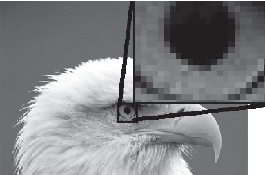
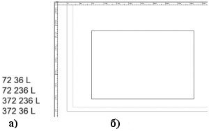

Когда-то очень давно у компьютеров вообще не было дисплея. Вся информация в те огромные ламповые монстры загружалась на бумажных носителях, называющихся перфолентами и перфокартами, результат выводился также на бумагу. Однако увеличение мощности компьютеров и сложности расчетов привели к необходимости разработки более удобного способа общения с машиной, в результате чего появился дисплей.
Долгое время дисплеи были текстовыми — ничего кроме цифр, а позднее букв, они не могли выводить. Однако уже тогда было понятно, что удобство работы требует большего — возможности вывода изображений. Именно момент появления дисплеев, которые могли выводить изображения, и можно считать моментом рождения компьютерной графики.
Итак, что именно называют компьютерной графикой? В широком смысле слова компьютерная графика — это все, для отображения чего на мониторе используется визуальная, образная среда.
Однако это слишком абстрактное определение, поэтому сузим понятие до практического использования. Под компьютерной графикой мы будем понимать процесс создания, обработки и вывода изображений разного рода с помощью компьютера.
Первый вид компьютерной графики, с которым мы познакомимся, — растровая, или точечная. Пользователю легко понять сущность этой графики. Вспомните свое детство, вы наверняка собирали различные мозаики. Чем больше было кусочков, тем подробнее получался рисунок, особенно если смотреть на него с расстояния.
Растровое изображение — это тоже своего рода мозаика. Только в данном случае вместо кусочков пластмассы — пикселы.
Пиксел (Pixel) — элементарная единица изображения в растровой графике, обычно имеющая квадратную форму. Размеры пиксела зависят от разрешения изображения (количества пикселов на единицу длины).
На рис. 0.1 показано растровое изображение и его увеличенный фрагмент. Отчетливо видны элементы квадратной формы, из которых складывается изображение.

Рис. 0.1 Растровое изображение складывается из пикселов, как стена из кирпичей
Учитывая эту специфику построения, растровая графика имеет следующие особенности:
растровое изображение всегда прямоугольной формы;
растровое изображение не столь гибко как векторное к изменению размера (масштабирование может заметно ухудшить качество);
растровый документ не может содержать объекты в разных цветовых режимах.
Разрешение (Resolution) — количество точек на единицу длины (дюйм, сантиметр). Один из основных параметров изображения. Чем он выше, тем качественнее изображение, но больше размер его файла. Обычно используется 72 пиксела на дюйм (так называемое экранное разрешение), но для получения качественного результата в полиграфии необходимо значительно больше.
Разрешение — это понятие, практически идентичное понятию "качество" для растровой графики.
Повышение качества за счет увеличения разрешения имеет обратную сторону медали — пропорциональное увеличение размеров файла.
Разрешение измеряется в пикселах на дюйм (стандарт) или сантиметр (встречается редко). В этом курсе разрешение всегда будет указано в пикселах на дюйм.
Векторное представление изображения кардинально отличается от растрового.Его принцип состоит в том, что описываются только основные точки изображения, а все промежуточные достраиваются между ними по определенным математическим законам. Например, если необходимо нарисовать отрезок прямой, можно указать только координаты концов отрезка, а также сделать пометку о том, что соединяющая их линия — прямая. Для описания окружности достаточно задать ее центр, указать радиус и сделать пометку "окружность". Аналогичным образом кодируются цвет объекта, толщина линий и др. В таком виде информация хранится в файле, а когда необходимо отобразить графический элемент — на мониторе, бумаге или другом носителе, — устройство вывода автоматически построит элементы изображения в соответствии с инструкциями(рис. 0.2).

Рис. 0.2 Представление изображения в вектором виде